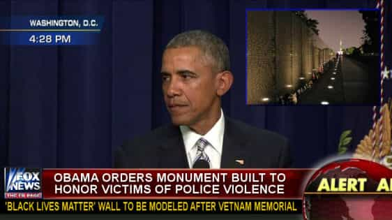
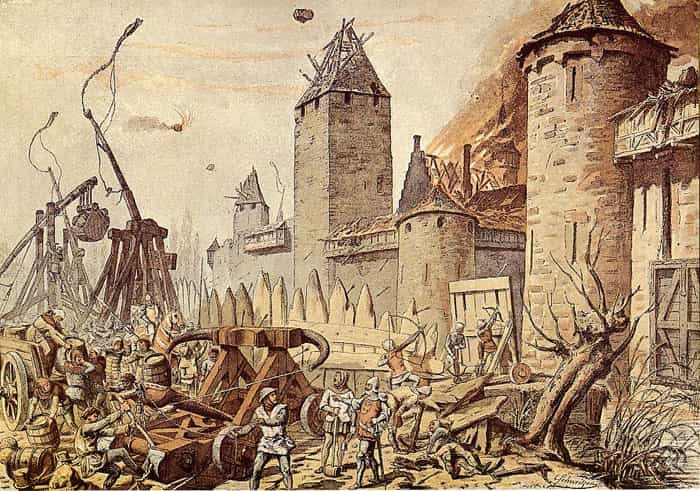

Daryush "Roosh" Valizadeh created ROK in October 2012. You can visit his blog at RooshV.com or follow him on Twitter and Facebook.


In the past year we’ve been the target of establishment attacks. Since then, I’ve had the privilege of speaking with insiders who understand the globalist master plan. Combining my own analysis with those discussions lead me to conclude that if Hillary Clinton wins the 2016 Presidential election, attacks against us and ideologically similar right-wing groups will explode in number, with the goal of shutting down our counter-narrative platforms and ensuring a Donald Trump figure never gets populist support again.
It’s easy to stay apolitical as long as political forces leave you alone, but the second you become a threat to the existing order, politics will become a painful part of your daily existence as pressure increases on your speech and behavior. Many young men in universities are finding this out right now as false rape and harassment charges ruin their lives before it gets started while men working in corporate America are already aware that they are one “sexist” or “homophobic” statement away from losing their livelihoods. The fact that many men are now recording their consensual sex encounters shows how badly men are being targeted.
If Hillary Clinton wins, there will be a huge increase in “acute” attacks against individuals and groups. At the same time, there will be a rapid introduction of dystopian new laws that serve as the leading edge of the “chronic” front. All men will be negatively affected under a Hillary presidency in one way or another, meaning that the globalist boot is fast approaching our faces.
The acute attacks will be witch hunts from the media, local politicians, and the Federal Government. They will target us, the alt right, alternative media, patriot groups, survivalists, traditionally conservative groups, and anyone else who strongly supports Donald Trump, tradition, or masculinity. The purpose of acute attacks is to psychologically break down, impoverish, and imprison those who have a powerful ability to counter the narrative or those who have the strength and organizational skill to resist tyranny with arms.
If the media can’t take someone down through their focused lies and distortions, like with what happened to me in February with the meetup outrage, the task will then be handed off to the Federal Government to pursue bogus “hate speech,” “extremist speech,” and “incitement to violence” charges, as is already being done in Europe (1, 2, 3, 4, 5, 6, 7). The IRS will be involved to wear down groups with targeted audits, like they did with the Tea Party, while the FBI will infiltrate and subvert groups that are meeting physically using COINTELPRO tactics.
The chronic attack phase will include passage of unconstitutional hate speech laws (or malicious interpretations of previously banal laws) that a compromised Supreme Court will not stop. A stricter variant of “Yes means yes” laws will be passed nationally, making every man who has consensual sex guilty of rape until he can definitively prove otherwise. Just as globalist insider Ezra Klein stated, the goal is for you to feel a “cold spike of fear” when interacting with women. So it shall be done.

Talking to girls in public will be illegal harassment or “hate crime,” and be enforced any time you make a girl feel bad for whatever reason, even if you merely stare at her the wrong way (such laws are currently being beta tested in the UK before wider rollout). Blatantly discriminatory “gender equality” laws in the workplace will lower the incomes of all men so that less qualified females can receive job positions and promotions at male expense.
In addition, the law will be selectively applied to maximize pain against men. Those who break the law against you will be allowed to walk, just like Hillary did after the charade of her FBI investigation, while you will be prosecuted for the most minor of missteps that the other side gets away with. The veneer of justice will be removed and only raw power will remain.

Obama was the “race” president, and look how badly he has damaged race relations in only eight years. Hillary will be the “gender” president. The future we have in store should be absolutely clear to you if she happens to defeat Trump.
Not only will she move to establish a techno-matriarchy where men are second-class citizens to any female, but she will ensure that no movement or organization will be able to challenge her or her establishment cronies ever again. This isn’t a trivial matter of getting banned from a web site like Twitter or Youtube—many of you will be forced to escape the country for no other reason than you happening to be a man who found himself on the wrong side of the establishment.
Many men say that Trump is controlled opposition. The evidence to that has been wholly uncompelling based on the genuine establishment attacks he’s received, but even if he’s lying about all of his policies, including building a wall, the one guarantee we can make about him is that he won’t attack men. There’s absolutely nothing in his candidacy or behavior in the past 40 years of his life that suggests it.
If Trump happens to win and does attack us, I will proudly wear egg on my face, with the depressing realization that our last hope for some semblance of normality has been destroyed and the dark age will be brutal for us all.

My vote for Trump is based on self-preservation for myself, my brothers, and all the men who support me. If Trump wins, I’m confident that we will be able to exercise our free speech without unfair persecution and not be wrongly tried in courts for masculine behaviors. If he does only a scrap of what he promises, we’ll be able to pursue our constitutionally given freedoms without fear of destitution, imprisonment, or worse.
I predict that a masculine renaissance will occur upon his victory, where men can once again focus on their own individual goals with Trump as a patriarchal role model. I would devote more of my energy to helping men successfully pair bond with women, like I started my writing career with, instead of having to play political defense as masculinity becomes retroactively classified as hate speech.
But if Hillary wins, we’re doomed. I’m not saying this out of emotion but out of careful consideration of the globalist master plan and the increased speed of their advancement in the past ten years. What you saw against us in February is just a warm-up of what will come to hundreds of individuals and organizations on the right, all while the justice system pushes genuinely insane laws that force all men to prove they are not rapists after their sexual encounters. I do not look forward to how my life will be like if Hillary does win, or having to wake up every day to see if the “big” attack has started against us or not.
I therefore urge all American readers of mine to vote for Donald Trump on November 8, 2016. While I am skeptical of some of his promises, and wonder if America is too far gone to make it great again, Donald Trump must win so that the pause button can be pushed against this nightmare of insanity that is already crushing men. He will allow us to regain our footing after being forced to watch in disbelief at all the negative changes that have been recently forced upon us. Let us all breathe a sigh of relief if he wins, and pray to God for safety if he doesn’t.
 If you like this article and are concerned about the future of the Western world, check out Roosh's book Free Speech Isn't Free. It gives an inside look to how the globalist establishment is attempting to marginalize masculine men with a leftist agenda that promotes censorship, feminism, and sterility. It also shares key knowledge and tools that you can use to defend yourself against social justice attacks. Click here to learn more about the book. Your support will help maintain our operation.
If you like this article and are concerned about the future of the Western world, check out Roosh's book Free Speech Isn't Free. It gives an inside look to how the globalist establishment is attempting to marginalize masculine men with a leftist agenda that promotes censorship, feminism, and sterility. It also shares key knowledge and tools that you can use to defend yourself against social justice attacks. Click here to learn more about the book. Your support will help maintain our operation.
Read Next: You’re Either A Globalist Or A Nationalist